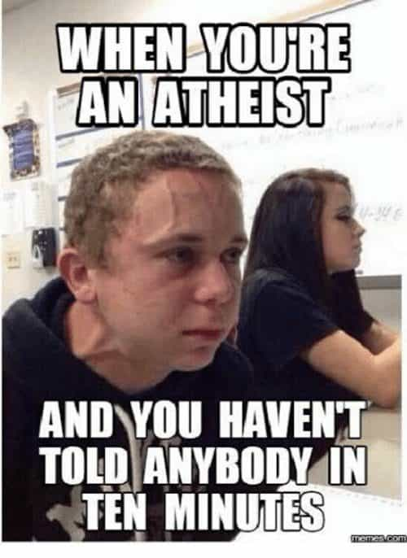

Corey is an iconoclast and the author of 'Man's Fight for Existence'. He believes that the key to life is for men to honour their primal nature. Visit his new website at primalexistence.com


Religion is a big topic in the manosphere with sporadic debates erupting over whether it is a positive influence for today’s masculinity and society at large or not. The religious camp argue that belief in God and religious moral values are basic necessities for red-pilled men who are fighting against modern cultural degeneracy while the non-religious camp argue that it’s just a distraction and, at worst, another form of blue pill used to control men.
My purpose here is not to blow up a debate (although it is practically unavoidable once the subject is brought up), nor is it to patronize the Christians on what they should or shouldn’t do (although many of these tenets apply to Christians as well), but to talk practical sense into some of the fellow non-believers who may find themselves at odds with the other men of manosphere who are religious. Here are some basic guidelines that I think should be adopted by the red pill atheists:

Atheists are accused of being too defensive and somewhat sensitive regarding their lack of faith and I find this to be generally true.
Perhaps it’s the indignation that comes with the feeling of being lied to when you were young and vulnerable, of having had believed in a supreme being that one feared, only to realize that it was all just superstition. Or perhaps it’s associated with the memories of having your family, school, or community trying to control you and enforce guilt within you. But whatever it may be, it’s best to leave it in the past and move on. Being reactive and displaying knee-jerk hostility to silly statements made by religious fanatics don’t help you at all, it just makes you look weak.
Never let yourself get trolled.
In the eighteen years or so that I’ve been on the Internet, I’ve never seen a debate on the existence of God end with one side saying, “Holy shit! Your arguments make perfect sense! I will now join you for you have opened my eyes.” So it surprises me that people still waste time typing away angry arguments that lean closer to insults than intellectual debates.
If people believe in something, they’re not going to change their minds no matter how much you challenge their beliefs using the best possible arguments (and trust me, I’ve tried and so did the other guys who tried to convert me), not unless their hearts are open to it or the seeds of doubts have already been sown. Just don’t do it.

Although debating is one of the dumbest waste of time ever, if you do insist, please learn to differentiate between the argument on the existence of God with the practical implications of religion. I see far too many people slipping from former to the latter when their position gets weak.

There’s an unfortunate connotation among the religious right that if you’re an atheist, you’re probably a progressive, leftist, hipster, faggot, pinko-commie socialist. It doesn’t matter how much you prove yourself to be not; the other camp doesn’t care. If you’re an atheist, you will be marked as an outsider. For that reason, I find it better to say that I’m not religious or “non-religious” and not mention religion at all until someone asks me first.
Besides the stereotype, I really don’t find any use in forming an identity around a lack of belief in something. I don’t consider myself a psychic-skepticist, Scientology-denier, or anti-Loki, so why should I do the same with religion? If a certain faith tries to limit my freedom, force its values onto me, or endanger me in anyway, I will push back, but there is no such danger for atheists in the West (unlike in Bangladesh.)

There are few atheists who think their lack of faith makes them smarter and better than the theists and insists on letting everyone know. This is a symptom of our Internet culture where people without real accomplishments try to one up others by proclaiming their identity or belief as being superior to the faceless strangers on the net. Although this is more common with the pseudo-intellectual Leftists, I’ve seen it enough times in the manosphere to warrant a mention.

I admit this is hard, especially when the other side starts to get rabid to a point of absurdity and accuses you of being literally Stalin or even autistic—it’s enough to declare the entire camp as being nothing but a bunch of crazies and intolerant buffoons. But I implore you to turn the other cheek.
I’ve met both extremes of great and wicked people regardless of their faith (although some exceptionally kind individuals have tended to be devout believers), so a person’s religious belief doesn’t seem to be a reliable indicator of his character. Don’t jump to conclusions so easily.
There are plenty of statheists from both the Left and the Right.
To compensate for their lack of faith, atheists tend to seek alternative gods to worship, substituting an immaterial deity for another one in the material world. Among these include: hedonism, consumerism, money, self-love, technology, ideology, and statism in all forms (including the worship of “civilization”). I can tell that there will be many disagreements as to whether these things actually represent false idols or not, but none of them can bring you genuine happiness and contentment in life, if not being outright traps to exploit you that will lead to your demise.
Instead of seeking false idols from without, seek enlightenment from within. If religion is not your cup of tea, stoic and Eastern philosophies (of Buddhism, Taoism, etc.) are good alternatives to follow. Know that you don’t need to be religious to be spiritual; it all depends on how you define spirituality.
I don’t think I need to tell the readers here of the importance of cultivating masculinity, but if you’re looking for something else to focus on to give you a meaning in life besides religion, masculinity should be one of your top three priorities. Learn to be good at being and man and everything else will follow.
As a non-believer, your inevitable mortality will likely trouble you. Unlike those who believe in heaven and hell, you have no afterlife to look forward to or take comfort in, only the eternal nothingness that comes with death. That is something you must face bravely if you wish to live a life of greatest satisfaction and potential.
Obviously, accepting death is something far harder to actually do than say. So if you fear death, try to make it your friend. Remind yourself of the brevity of life and dance with death to experience the thrill of living. Along the way, you just might come to accept it without even knowing. And once you do, you’ll know that you lived the best you could—that you were granted the chance to experience the world in all its mysterious glory.
Read More: The 6 Commandments Of Masculinity